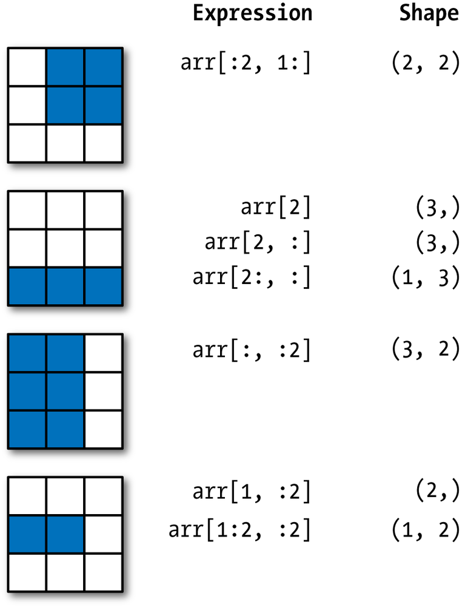
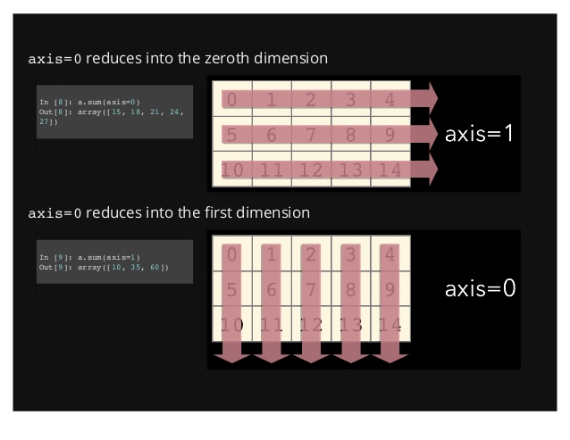

Programando Python
Um Curso Relâmpago
Prof: Darlan Cavalcante Moreira
Objetivos
- Aprender como usar a pilha de bibliotecas para computação científica em python
- Fazer uma simulação em python e obter uma curva como abaixo


Qual "bateria" devo usar?
- Python é uma linguagem de programação de uso geral
- Mas possui várias bibliotecas voltadas para computação científica
- Nesse curso vamos ver parte dessas ferramentas

- Nota: A biblioteca Numpy é o núcleo da computação científica em Python e é a mais importante de se aprender bem
Numpy Arrays
- Numpy nos fornece um array multidimensional de alto desempenho e ferramentas para trabalhar com esses arrays
- Um array armazena um conjunto de valores, todos do mesmo tipo, e possui um formato (shape)
- O shape de um array é uma tupla de inteiros não negativos e seu número de elementos corresponde ao rank do array
1D numpy array
Shape: (4,)
Tipo: int
2D numpy array
Shape: (2,3)
Tipo: float
3D numpy array
Shape: (4,3,2)
Tipo: int
Criando Arrays
- Existem diversas maneiras de criar um array
- A mais direta é listando seus elementos
Datatype
- Os elementos de um array só podem ser do mesmo tipo
- Um array é muito eficiente em armazenar e
computar se o tipo for
int,float, oucomplex - Podemos verificar o tipo de um array através da propriedade "dtype"
Data Shape
- Podemos verificar o formado de um array através da propriedade shape
- Além da propriedade shape podemos usar size para determinar o número de elementos em um array
- Use o método reshape para mudar o formato do array
Criando Arrays
- Há várias funções que retornam arrays no numpy
- Mais comuns:
zeros,ones,eye,empty
Criando Arrays
- Podemos também criar arrays com valores aleatórios, em um intervalo, etc
Operações Básicas
- Operadores aritméticos em arrays operam elemento-a-elemento
Operações Básicas
- O operador
*não é exceção e efetua uma multiplicação element-a-elemento
Operações Básicas
- Algumas operações, como
+=e*=, modificam o array atual ao invés de criar um novo array
with casting rule 'same_kind'
Principais Operações em Arrays
- As diversas funções matemáticas são implementadas como
np.nome_da_funçãoe algumas estão também disponíveis como métodos do array
Principais Operações em Arrays
- NumPy possui as funções matemáticas usuais: sin, cos, exp, etc.
- Elas são chamadas de "universal functions"(ufunc)
- Essas funções operam individualmente em cada elemento do array, produzindo um array como saída
Indexando Arrays
- Arrays com uma dimensão podem ser indexados, fatiados, e iterados de forma semelhante a listas
Indexando Arrays
- Arrays multidimensionais podem conter um índice por eixo
- Esses índices são separados por vírgula
- Podemos fornecer menos índices que eixos
- Também podemos usar índices negativos
Indexando Arrays
- Podemos usar também
...para representar tantos ":" quanto necessário para produzir uma indexação completa - Ex: Considere por exemplo um array
xde rank 5 - Temos então que:
x[1,2,...]equivale ax[1,2,:,:,:],x[...,3]equivale ax[:,:,:,:,3]andx[4,...,5,:]equivale ax[4,:,:,5,:]- Etc.
- Nota: Ao indexar uma dada dimensão o array resultante não possui aquela dimensão, mas para slices a dimensão continua existingo
Indexando Arrays
Exemplos

Indexando Arrays
Vetores Booleanos
- Arrays booleanos podem ser usados para indexar outros arrays
Manipulanto o shape
- shape define o número de elementos em cada dimensão
- Há várias maneiras de manipular o shape de um array
- Ao invés de reshape podemos usar resize modifica o array
Empilhando Arrays
- Vários arrays podem ser empilhados ao longo de um determinado eixo
- Algumas das funções para isso são
hstack,vstack,concatenateestack, np.concatenate
Representação de um Array na Memória
- Um array é armazenado em uma região contínua de memória independentemente de sua dimensão
- Se mudarmos o shape de um array normalmente não é feita uma cópia
- A ordem em que os elementos são armazenados na memória pode tanto ser como "em C" (padrão) ou como "em Fortran"
- Ordem do C: A última dimensão varia mais rapidamente
Representação no NumpyRepresentação na Memória
- Ordem do Fortran: A primeira dimensão varia mais rapidamente
Representação no NumpyRepresentação na Memória
Cópias e Views
- When operating and manipulating arrays, their data is sometimes copied into a new array and sometimes not
- Casos sem cópia:
- Assinalamento
- Mudança de shape
- Argumentos de funções
Cópias e Views
- Diferentes objetos arrays podem compartilhar os mesmos dados na memória
- O método
viewde um array cria um novo objeto array que utiliza os mesmos dados - Mudanças feitas nos dados de um são refletidas no outro array, mas os dois não são o mesmo objeto como ocorre em python com um assinalamento
- Os dois objetos podem ter formas diferentes
Cópias e Views
- Fatiar um array retorna um view do array
- Para criar um cópia independente de um array use o método
copy
Operações matemáticas
- Soma, Média, variância, etc
- Fornecer o eixo


Functions and Methods Overview
- Here is a list of some useful NumPy functions and methods names ordered in categories. See Routines for the full list.
- Array Creation: arange, array, copy, empty, empty_like, eye, fromfile, fromfunction, identity, linspace, logspace, mgrid, ogrid, ones, ones_like, r, zeros, zeros_like
- Conversions: ndarray.astype, atleast_1d, atleast_2d, atleast_3d, mat
- Manipulations: array_split, column_stack, concatenate, diagonal, dsplit, dstack, hsplit, hstack, ndarray.item, newaxis, ravel, repeat, reshape, resize, squeeze, swapaxes, take, transpose, vsplit, vstack
- Questions: all, any, nonzero, where
- Ordering: argmax, argmin, argsort, max, min, ptp, searchsorted, sort
- Operations: choose, compress, cumprod, cumsum, inner, ndarray.fill, imag, prod, put, putmask, real, sum
- Basic Statistics: cov, mean, std, var
- Basic Linear Algebra: cross, dot, outer, linalg.svd, vdot
Broadcast
- Operações no NumPy geralmente são feitas em pares de arrays elemento-a-elemento
- Broadcast corresponde a maneira como o numpy trata arrays com formas diferentes durante operações aritméticas
- Broadcast fornece um meio de vetorizar operações com arrays tal que os loops ocorram em C, ao inves de Python
- Ele faz isso sem a necessidade de cópias desnecessárias dos dados e normalmente leva implementações eficientes de algorithmos
- O exemplo mais simples de broadcast ocorre quando um array e um escalar são combinados, onde o escalar é esticado durante a operação aritmética para ter a mesma forma que o array
- O código é até mais eficiente já que menos memória precisa ser acessada durante a multiplicação
Broadcast
- Para generalizar a ideia do caso anterior o broadcast define duas regras:
- Regra 1: Se os arrays de entrada possuem número de dimensões diferentes um "1" será repetidamente adicionado no início do menor array até que todos os arrays tenham o mesmo número de dimenões
- Regra 2: Arrays de tamanho 1 em um dada dimensão ajem como se eles tivessem o mesmo tamanho que o array de maior tamanho nessa dimensão
- Após a aplicação das duas regras anteriores as dimensões dos dois arrays devem bater